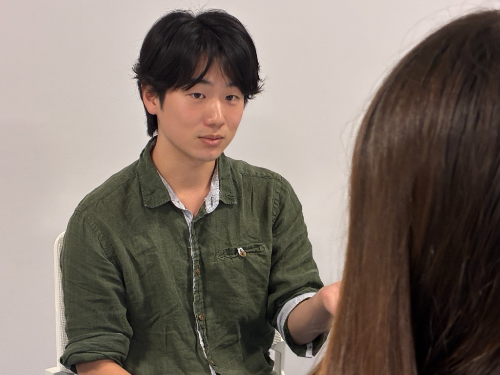

授業をしない。構文を設計し、自習を支配する。
私たちは「慶應SFC英語特化塾」として発足した、新時代の受験英語レーベルです。
大手予備校のように「わかりやすい講義を聞かせて満足させる」教育は行いません。
難関私大入試英語を満点で突破した講師自らが、英文の構造をA4・1枚で解き明かす「構文設計メソッド」を直伝し、毎日・毎時間の自学自習メニューを完全に管理します。
慶應SFC英語で「時間が足りない」「読めない」真の理由
総合政策学部・環境情報学部の英語は、日本最長クラスの超長文が出題されます。
単語の丸暗記や学校の画一的な授業では、SFCの学術英語を時間内に解き切ることは不可能です。
1,000語超×2本の超長文による時間切れ
1題あたり約1,000〜1,200語の学術論文クラスの英文が2本。返り読みをして日本語に直そうとする受験生は、大問1の途中で試験終了を迎えてしまいます。
1文が4〜5行に及ぶ複雑な複文構造
関係詞・分詞構文・同格が何重にも入れ子になった英文。主語と述語の関係を見失い、内容理解が曖昧なまま選択肢で間違えます。
専門性の高い抽象的な論文語彙
社会科学、先端テクノロジー、生命倫理など未見の難単語が頻出。文脈と構造から論理的に意味を推測する技術がなければ太刀打ちできません。
A4用紙1枚の構文設計体系「構文設計メソッド」
何百ページもある分厚い文法書は必要ありません。節の結合ルールをA4・1枚に凝縮した究極の文法構造ルールで、英文の骨格を2ヶ月で完全掌握します。
講師自身が英検準2級から慶應英語満点・IELTS 7.0を達成した「完全な再現性」
「元から英語ができたわけではない」からこそ、読めない原因と解決策を完全に言語化できます。
A4・1枚の構文設計メソッドをインストールすることで、どんなに複雑なSFCの超長文であっても「主節（骨格）」と「従属節（装飾）」が瞬時に視覚的に分離され、ネイティブと同じ左から右への高速直読直解が可能になります。
- ✓ 返り読みを完全追放し、読書速度を1分間160語ペースへ引き上げ
- ✓ 複雑な複文構造を瞬時に見抜き、内容一致問題を100%論理的に解答
- ✓ 慶應SFCの過去問で20分以上の見直し時間を残して85%〜満点を奪取

日次自習完全管理 × 24時間LINE伴走
武田塾型マネジメントの進化版。「今日何を勉強すればいいか」で1分たりとも迷わせません。
毎日の自習メニュー完全指定
SFC合格から逆算し、英単語・構文・過去問の進捗を日割りで指定。生徒は迷わず100%集中できます。
週1回 60分 マンツーマン口頭試問
「なぜこの構造だと判断したか」を目の前で口頭試問。分かった気になっている箇所を徹底的に潰します。
LINEで24時間いつでも質問対応
自宅でSFC過去問を解いていて生じた疑問をスマホで質問可能。講師本人が24時間以内に即時回答します。
定期SFC実力測定テスト
SFC過去問演習で読解速度と得点率を定期的に数値化。確実な合格可能性を担保します。
英検準2級から半年でSFC合格。慶應英語満点講師が直接担当
アルバイト講師への丸投げは一切なし。自らの受験で「最短半年での逆転合格」を実証した本人が、責任を持って直接伴走します。

堀安 泰世
「城西川越高校時代、もともとは英検準2級レベルでした。最初から英語が得意だったわけではなく、何百ページもある分厚い参考書を暗記しようとしては挫折を繰り返していました。
そこから試行錯誤を重ねて確立したのが、英文の節の結合ルールをA4・1枚に凝縮した『A4構文設計メソッド』です。この型をインストールし、無駄のない徹底した自習管理を実行した結果、わずか半年で慶應義塾大学SFC（総合政策学部）に逆転合格。さらに慶應入試英語満点、英検1級、IELTS 7.0を達成しました。
『読めない原因』と『どうすれば最短半年でSFC合格圏に到達できるか』を論理的に言語化し、日々の自習メニューまで完全に管理・伴走します。」
大手予備校・一般個別指導との圧倒的な違い
なぜ、当塾のやり方なら偏差値50からでもSFC英語で8.5割〜満点が狙えるのか。
| 比較項目 | 大手映像・集団予備校 | 一般的な個別指導塾 | 慶應SFC英語特化塾 |
|---|---|---|---|
| 指導方針 | 週1回の講義授業 （授業を受けっぱなしで終了） |
テキストのわからない所解説 （場当たり的な質問対応） |
授業ゼロ × 毎日の自習完全指定 （自学自習で圧倒的な学習量を担保） |
| 文法・構文指導 | 何百ページもある分厚い文法書 （途中で挫折しやすい） |
市販の標準参考書 （SFCの論文長文に対応できない） |
A4・1枚の構文設計メソッド （節の結合ルールを最短2ヶ月で体得） |
| 担当講師 | 人気講師（質問はチューター） | 大学生アルバイト講師 | 慶應英語満点講師が直接担当 （全生徒の学習を代表自ら完全把握） |
| 質問・サポート | 校舎の受付時間内のみ | 次回のコマまで待つ必要あり | LINEで24時間質問対応 （自宅学習の疑問を即日解消） |
| SFC特化度 | 私大全般向けの汎用講座 | 学校の定期テスト〜標準入試 | 100% 慶應SFC入試特化 （1,000語超×2本の論文読解に完全適合） |
慶應SFC特化コース 受講料金プラン
講師（堀安泰世）が全生徒の自学自習とSFC過去問答案を完全に把握・伴走するため、全学年合計で【最大10名限定】とさせていただきます。
高校1年生プラン
英文構造の基礎確立・高校英語早期マスター
- A4構文設計 基礎インストール
- 日割り自習メニュー完全指定
- 週1回 60分 マンツーマン口頭試問
- 24時間 LINE質問対応
高校2年生プラン
難関構文早期制覇・英検準1級突破・SFC基礎固め
- 複文・長文構造の高速直読訓練
- 日割り自習メニュー完全指定
- 週1回 60分 マンツーマン口頭試問
- 24時間 LINE質問対応
- 定期実力判定テスト
高校3年生・既卒プラン
SFC超長文完全攻略・過去問直前演習・満点奪取
- SFC過去問1,000語長文 即解演習
- 日割り自習メニュー完全指定
- 週1回 60分 マンツーマン口頭試問
- 24時間 LINE質問対応
- SFC英語 過去問演習・得点率分析
※全学年合計で定員10名に達し次第、今年度の募集を締め切ります。
無料受験相談・体験授業に申し込む →よくあるご質問
慶應SFC合格への第一歩を、ここから。
詳しいご相談や無料体験授業をご希望の方は、
下記のお問い合わせフォームまたは公式LINEよりお申し込みください。
無料受験相談・体験授業 申込フォーム
現状の偏差値と課題を分析し、SFC入試英語の最短攻略ロードマップを作成します。